Chapter 2
Common messages
Common messages are intended to control the graphic and the time space of the components of a scene. They could
be sent to any address with the form /ITL/scene or /ITL/scene/identifier where identifier is the
unique identifier of a scene component.
-
-
commonMsg 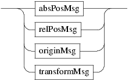
- show: shows or hides the destination object. The parameter is interpreted as a boolean value. Default
value is 1.
- del: deletes the destination object.
- lock: if not null, cancel any del message sent to this object. The object will still be deleted if its
ancestors receive a del message. The parameter is interpreted as a boolean value. Default value is 0.
- export and exportAll: exports an object to an image file respectively without or with its childrens.
If the exported object is a scene, childrens are always exported.
1) exports to the filePath name. The filePath can be relative or absolute. When the filename is not
specified, exports to path/identifier.pdf. The file extension is used to infer the export format.
Supported extensions and formats are: pdf, bmp, gif, jpeg, png, pgm, ppm, tiff, xbm, xpm.
2) exports to rootPath/identifier.pdf.
When the destination file is not completely specified (second form or missing extension), there is an
automatic numbering of output names when the destination file already exists.
- save: recursively saves objects states to a file. When a message list is present, only the specified
attributes are saved. The filePath can be relative or absolute. When relative, an absolute path is
build using the current rootPath (see application or scene current paths p.78 and p.87). The optional
+ parameter indicates an append mode for the write operation. The message must be sent to the
address /ITL to save the whole application state.
Note: when a list of attributes is specified, unknown attributes are silently ignored.
Note: the file extension for INScore files is .inscore. INScore files dropped on the application or on
a window are interpreted as script files (see section 17 p.177).
- ’PositionMsg’ are absolute and relative position messages.
- ’ColorMsg’ are absolute and relative color control messages.
- ’TimeMsg’ are time management messages. They are described in section 3 p.32.
- ’WatchMsg’ are described in section 16 p.159.
- ’EventMsg’ are described in section 16.4 p.168.
EXAMPLE
Export of a scene to a given file as jpeg at the current root path:
/ITL/scene export ’myexport.jpg’;
Saving a scene to myScore.inscore at the current root path, the second form saves only the x, y and z attributes,
the third form uses the append mode:
/ITL/scene save ’myScore.inscore’;
/ITL/scene save x y z ’thePositions.inscore’;
/ITL/scene save ’myScore.inscore’ ’+’;
Hiding an object:
/ITL/scene/myObject show 0;
2.1 Positioning
-
-
PositionMsg 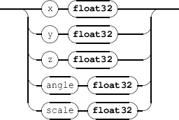
Graphic position messages are absolute position or relative position messages. They can also control an object
origin and transformations like rotation around an axis.
2.1.1 Absolute positioning
-
-
absPosMsg 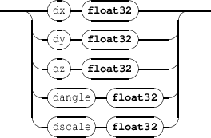
- x y: moves the x or y coordinate of a component. By default, components are centered on their x, y
coordinates. The coordinates space range is [-1,1].
For a scene component, -1 is the leftmost or topmost position, 1 is the rightmost or bottommost
position. [0,0] represents the center of the scene.
For the scene itself, it moves the window in the screen space and the coordinate space is orthonormal,
based on the screen lowest dimension (i.e. with a 4:3 screen, y=-1 and y=1 are respectively the exact
top and bottom of the screen, but neither x=-1 nor x=1 are the exact left and right of the screen).
Default coordinates are [0,0].
- z: sets the z order of a component. z order is actually relative to the scene components: objects of
high z order will be drawn on top of components with a lower z order. Components sharing the same
z order will be drawn in an undefined order, although the order will stay the same for as long as they
live.
Default z order is 0.
- angle: sets the angle value of a component, which is used to rotate it around its center. The angle is
measured in clockwise degrees from the x axis.
Default angle value is 0.
- scale: reduce/enlarge a component. Default scale is 1.
EXAMPLE
Moving and scaling an object:
/ITL/scene/myObject x -0.9;
/ITL/scene/myObject y 0.9;
/ITL/scene/myObject scale 2.0;
2.1.2 Relative positioning
-
-
relPosMsg 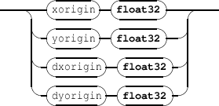
- dx, dy, dz messages are similar to x, y, z but the parameters represent a displacement relative to the
current target value.
- drotatex, drotatey, drotatez are relative rotation messages. dangle is equivalent to drotatez
and is maintained only for compatibility reasons.
- dscale is similar to scale but the parameters represents a scale multiplying factor.
EXAMPLE
Relative displacement of an object:
/ITL/scene/myObject dx 0.1;
2.1.3 Components origin
The origin of a component is the point (xo, yo) such that the (x, y) coordinates and the (xo, yo) point
coincide graphically. For example, when the origin is the top left corner, the component top left corner is drawn at
the (x, y) coordinates.
-
-
originMsg 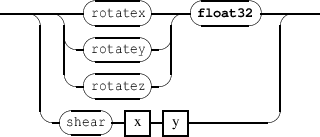
- xorigin, yorigin are relative to the component coordinates space i.e. [-1,1], where -1 is the top
or left border and 1 is the bottom or right border. The default origin is [0,0] i.e. the component is
centered on its (x,y) coordinates.
- dxorigin, dyorigin represents displacement of the current xorigin or yorigin.
EXAMPLE
Setting an object graphic origin to the top left corner.
/ITL/scene/myObject xorigin -1. ;
/ITL/scene/myObject yorigin -1. ;
2.2 Components transformations
A component tranformation specifies 2D transformations of its coordinate system. It includes shear and object
rotation on x, y and z axis.
-
-
transformMsg
- rotatex rotatey rotatez: rotates the component around the corresponding axis. Parameter value
expresses the rotation in degrees.
- drotatex drotatey drotatez: relative rotations.
- shear transforms the component in x and y dimensions. x and y are float values expressing the
transformation value in the corresponding dimension. Values should be in the range ]-1, 1[.
- dshear relative shear transformation.
EXAMPLE
Rotating an object graphic on the z axis.
/ITL/scene/myObject rotatez 90. ;
NOTE angle and rotatez are equivalent. angle has been introduced before the transformation messages and is
maintained for compatibility reasons.
2.3 Color messages
-
-
ColorMsg 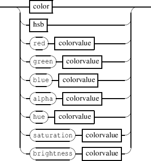
Color messages are absolute or relative color control messages. Color may be expressed in RGBA or
HSBA.
2.3.1 Absolute color messages
-
-
absColorMsg
red, green, blue, hue, saturation, brightness, alpha messages address a specific part of a color using the
RGB or HSB scheme.
-
-
colorvalue 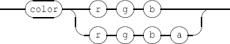
The value may be specified as integer or float. The data range is given in table 2.1. When the alpha component is not
specified, the color is assumed to be opaque.
|
|
|
| Component | integer range | float range |
|
|
|
| red [R] | [0,255] | [-1,1] |
| green [G] | [0,255] | [-1,1] |
| blue [B] | [0,255] | [-1,1] |
| alpha [A] | [0,255] | [-1,1] |
| hue [H] | [0,360] | [-1,1] mapped to [-180,180] |
| saturation [S] | [0,100] | [-1,1] |
| brightness [B] | [0,100] | [-1,1] |
|
|
|
| |
Table 2.1: Color components data ranges when expressed as integer or float.
EXAMPLE
The same alpha channel specified as integer value or as floating point value:
/ITL/scene/myObject alpha 51 ;
/ITL/scene/myObject alpha 0.2 ;
2.3.2 The color messages
-
-
color
color sets an object color in the RGBA space. The color can be specified in different ways:
- 1 sets the color using RGB values. Alpha is not specified and the color is assumed to be opaque.
- 2 sets the color using RGBA values.
- 3 sets the color using a name among
html defined names (see at https://www.w3schools.com/colors/colors_names.asp). Name is
not case sensitive.
- 4 sets the color using a single hexadecimal value in the form 0xrrggbb or 0xrrggbbaa.
The default color value is [0,0,0,255].
2.3.3 The hsb messages
-
-
hsb 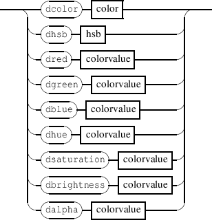
hsb sets an object color in the HSBA space. When A is not specified, the color is assumed to be opaque.
2.3.4 Relative color messages
-
-
relColorMsg 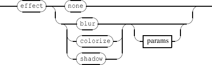
- dred, dgreen, etc. messages are similar to red, green, etc. messages but the parameters values
represent a displacement of the current target value.
- dcolor and dhsb are similar and each color parameter represents a displacement of the corresponding
target value.
EXAMPLE
Moving a color in the RGBA space:
TL/scene/myObject dcolor 10 5 0 -10 ,
will increase the red component by 10, the blue component by 5, and decrease the transparency by
10.
NOTE Objects that are carrying color information (images, SVG) don’t respond to color change but are sensitive to
transparency changes.
2.4 Pen control
Pen messages accepted by all the components and result in 2 different behaviors:
- for components types rect | ellipse | polygon | curve | line | graph | fast graph
| grid, it makes the object border visible using the pen attributes;
- for the other components and when the pen width is greater than 0, it makes the object bounding box
visible.
-
-
penMsg
- penWidth controls the pen width. The default value is 0 (excepted for line objects, where 1.0 is the
default value). It is expressed in arbitrary units (1 is a reasonable value).
- penColor controls the pen color. The color should be given in the RGBA space. The default value is
opaque black (0 0 0 255).
- penStyle controls the pen style.
- penAlpha, pendAlpha controls the pen transparency only. See section 2.3 p.18 for the expected
-
-
penstyle 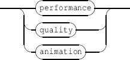
The pen style default value is solid.
EXAMPLE
Setting a rectangle border width and color:
/ITL/scene/rect set rect 0.5 0.5 ;
/ITL/scene/rect penWidth 2. ;
/ITL/scene/rect penColor 255 0 0 ;
2.5 The ’effect’ messages
The effect message sets a graphic effect on the target object.
-
-
effectMsg 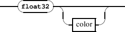
- none: removes any effect set on the target object.
- blur, colorize, shadow: sets the corresponding effect. An effect always replaces any previous
effect. The effect name is followed by optional specific effects parameters.
NOTE An effect affects the target object but also all the target slaves.
2.5.1 The blur effect
-
-
blurParams 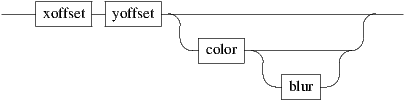
Blur parameters are the blur radius and a rendering hint. The radius is an int32 value. By default, it is 5 pixels. The
radius is given in device coordinates, meaning it is unaffected by scale.
-
-
blurHint 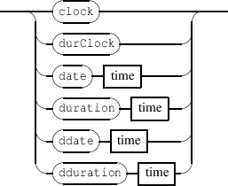
Use the performance hint to say that you want a faster blur, the quality hint to say that you prefer a higher
quality blur, or the animation when you want to animate the blur radius. The default hint value is
performance.
EXAMPLE
Setting a 8 pixels effect on myObject
/ITL/scene/myObject effect blur 8;
2.5.2 The colorize effect
-
-
colorizeParams 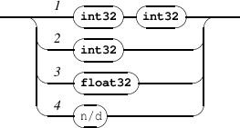
Colorize parameters are a strength and a tint color. The strength is a float value. By default, it is 1.0. A strength 0.0
equals to no effect, while 1.0 means full colorization.
The color is given as a RGB triplet (see section 2.3 p.18) by default, the color value is light blue (0, 0,
192).
EXAMPLE
Setting a red colorize effect on myObject with a 0.5 strength.
/ITL/scene/myObject effect colorize 0.5 200 0 0;
2.5.3 The shadow effect
-
-
shadowParams 
xoffset and yoffset are the shadow offset and should be given as int32 values. The default value is 8 pixels. The
offset is given in device coordinates, which means it is unaffected by scale.
The color is given as a RGBA color (see section 2.3 p.18) by default, the color value is a semi-transparent dark gray
(63, 63, 63, 180)
The blur radius should be given as an int32 value. By default, the blur radius is 1 pixel.
EXAMPLE
Setting a shadow effect on myObject.
The shadow offset is (10,10) pixels, the color is a transparent grey (100,100,100, 50) and the blur is 8 pixels.
/ITL/scene/myObject effect shadow 10 10 100 100 100 50 8;
2.6 The ’edit’ message
The edit message opens a small editor that allows to edit the target object attributes.
-
-
effectMsg 
- 1: without argument, the editor is initalized with all the target object attributes.
- 2: using a list of attributes, the editor is initalized with the target object corresponding attributes. Note
that set as attribute can be used to edit the object set message.
- 3: reset is used to clear the edit string stored in the object cache. It is equivalent to the ’clear’ button
in the edit dialog. Note that as long as the edit string stored in the cache is not empty, edit messages
are ignored unless followed by a reset (see below).
Each object maintains the current content of the editor, that is initialized at first edit message or when this content
is cleared. Successive call to edit will preserve the editor content unless it is cleared.
NOTE Since the editor preserves its content, it doesn’t take account of changes that may result from received messages
and thus may not reflect the target object changes. To synchronize the editor content with the current
attributes values, you can clear the editor content, which will refresh the attributes to their current
values.
NOTE Although initialized with the target object attributes, the editor supports arbitrary INScore messages, i.e. addressed
to any other object or even making use of extended OSC addresses.
EXAMPLE
Editing an object on double click:
/ITL/scene/myObject watch doubleClick (/ITL/scene/myObject edit);
Editing some specific attributes:
/ITL/scene/myObject watch doubleClick (/ITL/scene/myObject edit x y);